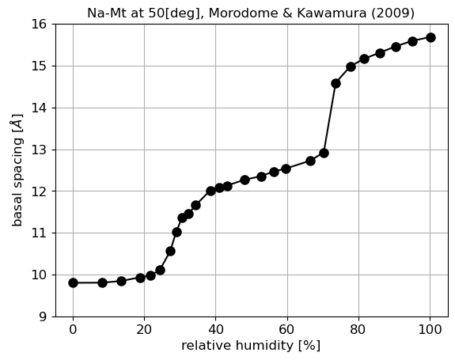

当面の目標として，数値解析に用いることのできる水和エネルギーモデルの定式化を行う． そのために，CG system(粗視化粒子系)の自由エネルギーを次のように定義しなおす． \begin{equation} G=U_{LJ}+U_{hyd} \label{eqn:Gtot} \end{equation} ここに\(G_{LJ}\)は粒子間相互作用エネルギーを\(U_{hyd}\)は水和エネルギーを表す． CG系の化学ポテンシャル\(\mu\)は式(\ref{eqn:Gtot})の水分子数\(N\)に関する微分として 次のように表される． \begin{equation} \mu= \frac{\partial G}{\partial N} = \frac{\partial U_{LJ}}{\partial N} + \frac{\partial U_{hyd}}{\partial N} \label{eqn:mu_sys} \end{equation} CG系が平衡状態にあるとき，\(\mu\)は外界の化学ポテンシャル\(\mu_{ex}\)とつりあう．すなわち \begin{equation} \mu = \mu_{ex} \label{eqn:equiv_mu} \end{equation} が成り立つ．いま，粘土含水系が湿度の規定された環境中に置かれていたとする． その場合\(\mu_{ex}\)は，気体状態での水の化学ポテンシャルとして与えられる． このことが明確になるように\(\mu_{ex}=\mu_w\)と書くことにする． \(\mu_w\)は，相対湿度\(r_H\)と次の関係がある． \begin{equation} r_H = \frac{\phi(P^{sat}_w)}{\phi(P_w)} \exp\left( -\frac{\mu^{sat}_w-\mu_w }{RT} \right) \label{eqn:rH} \end{equation} ただし，\(R\)は気体定数，\(T\)は温度，\(\mu_w\)$と\(P_w\)は，それぞれ 粒子浴(ここでは外界の水分溜)の化学ポテンシャルと蒸気圧を表し， satは飽和状態での量であることを意味する．また，\(\phi\)はフガシティー 係数(fugacity coefficient)を表し，\(r_H\)は0から1の値をとり，パーセント表示する場合には \(100 r_H\)とする． 相対湿度\(r_H\)と積層した粘土分子の層間距離(basal spacing)\(d\)の関係は 粉末X線回折(XRD:X-ray diffraction)試験によって調べられており， Na型モンモリロナイトでは，相対湿度の増加にともない 無水状態の0層膨潤から3層膨潤状態まで，階段状に変化することが知られている． 従って，層間距離$h$を相対湿度\(r_H\)の関数として \begin{equation} h=h(r_H; T,P) \label{eqn:h_rH} \end{equation} と表すことにする．ここで，式(\ref{eqn:h_rH})の右辺は， 層間距離\(h\)$がパラメータ\(T\)と\(P\)を含む\(r_H\)の関数であること を示している．ただし，これら\(T\)や\(P\)の変化が無視できるときには省略し， 単に\(h=h(r_H)\)と書く． XRD試験で測定した式(\ref{eqn:h_rH})の関係は，膨潤曲線(swelling curve)と呼ばれる． 例えば，天然のモンモリロナイトについては\(**\)に，合成されたスメクタイト 結晶については\(**\)に測定結果が報告されている． これらの文献では，モンモリロナイトの膨潤曲線は階段状に変化し， 特に，合成された巨大モンモリロナイト分子の粉末X線回折試験の結果からは， ほぼ完全な階段状の膨潤曲線が得られることが示されている． このような実験事実を踏まえれば，膨潤曲線(\ref{eqn:h_rH})は，単位ステップ関数: \begin{equation} H(x)=\left\{ \begin{array}{lc} 0, & (x \lt 0) \\ 1, & (x \gt 0) \\ \end{array} \right. \label{eqn:Hx} \end{equation} を用いて次のように表すことができる. \begin{equation} h(r_H)= \sum_{i=0}^3 \Delta h_i H(r_H-r_i) \end{equation} ここで, \begin{equation} \mu_w = \mu_w^{sat} +RT \log \left\{ \frac{\phi(P_w)}{\phi(P^{sat}_w)} r_H \right\} \label{eqn:mu_rH} \end{equation} より,平衡状態では \begin{equation} \frac{\partial U_{LJ}}{\partial N} + \frac{\partial U_{hyd}}{\partial N} = \mu_w^{sat} +RT \log \left\{ \frac{\phi(P_w)}{\phi(P^{sat}_w)} r_H \right\} \label{eqn:equiv_rH} \end{equation} 粘土単結晶の場合，\(N\)と\(r_H\)は，ともに層間距離\(h\)の関数として表すことができるので， 式(\ref{eqn:equiv_rH})を次のように書き直すことができる． \begin{equation} \left( \frac{\partial U_{LJ}}{\partial h} + \frac{\partial U_{hyd}}{\partial h} \right) \frac{\partial d}{\partial N} = \mu_w^{sat} +RT \log \left\{ \frac{\phi(P_w)}{\phi(P^{sat}_w)} r_H(h) \right\} \label{eqn:} \end{equation} これを水和エネルギー\(U_{hyd}\)の項について解けば， \begin{equation} \frac{\partial U_{hyd}}{\partial h} = -\frac{\partial U_{LJ}}{\partial h} + \left[ \mu_w^{sat} +RT \log \left\{ \frac{\phi(P_w)}{\phi(P^{sat}_w)} r_H(h) \right\} \right] \frac{\partial N}{\partial h} \end{equation} とできるので，この結果を層間距離について積分することで 単結晶に対する水和エネルギー関数が得られる． ただし，CG-MD解析では水和エネルギーの勾配だけが必要とされる ため，必ずしも水和エネルギー関数そのものを求める必要はない． 以下，\(U_{LJ}\)や\(r_H(h)\)を具体的に表し， 水和エネルギー勾配が\(h\)に関するどのような関数であるかを調べる．
CG系の粒子間相互作用エネルギーは，次のようなLenard-Jones(LJ)ポテンシャルで与えられている． \begin{equation} U(\boldsymbol{x}_i,\boldsymbol{x}_j;\sigma)=4\varepsilon \left\{ \left( \frac{\sigma}{r_{ij}}\right)^{12} - \left( \frac{\sigma}{r_{ij}}\right)^{6} \right\} , \ \ (r_{ij}=|\boldsymbol{x}_i-\boldsymbol{x}_j|) \label{eqn:LJ} \end{equation} ここに，\(\boldsymbol{x}_i\)は第\(i\)粗視化粒子の位置ベクトルを， \(\sigma\)はLJポテンシャルの特性距離を表し，ポテンシャルの深さを 決めるパラメータ\(\varepsilon\)の値は \begin{equation} \varepsilon=1.0\times 10^{-19}, \ \ ({\rm Nm}) \label{eqn:eps_num} \end{equation} である．
膨潤曲線のデータ起こし
- 論文Figureのpng画像をsvgzファイルにインポート
( Yamada.svgz,
Morodome.svgz )

論文で報告されNa型スメクタイトの膨潤曲線 - トレースするグラフにドットを配置 (measure.svgz)
- 配置したドットのobject IDを編集(わかり易い名前に手動で変更)
- inkscapeコマンドでobject情報[ID,x,y,width,height]を取得(inkscape --query-all measure.svgz)
-
pythonスクリプトでスケールを復元してグラフ化mkgrph.py
 論文から復元した膨潤曲線(Naモンモリロナイト,50℃)(Morodome & Kawamura 2009)
pythonスクリプトmkgrph.py で，ステップ関数と誤差関数それぞれを用いて膨潤曲線を近似．

なお，再構成した実験データの点数は、元の実験データ点数より少ない (プロットが重なって見えないため).
平滑化した膨潤曲線を用いることの問題点: 勾配が負になる箇所が生じ．その箇所で逆関数が1価関数にならない!
この数値データを使って水和エネルギー関数を定義．
次にやるべきことは，MD膨潤曲線 \begin{equation} h=h(N), \ \ h'(N)=\frac{dh}{dN} \label{eqn:MD_sw} \end{equation} を数値的にモデル化して使用可能な状態にすること．
MD計算結果(MD_Data/ NaMt.dat, CaMt.dat)
いずれも水分子数0のときのデータを1行目に加筆.
dn/dhの計算とグラフ表示には mk_dndh.py --> mk_dndh.png(画像), mk_dndh.dat(データ) を使用.
データ補間と水和エネルギーモデルの作成(uhyd.py)
数値データはuhyd.datに保存される．

MD計算とXRD実験で得られた膨潤曲線をCG-MD計算に利用するための準備
-
MD_Data/NHmap.cpp
\(n(H2O) \rightarrow h\)間のマッピング
入力データ: MD_Data/NaMt.dat
出力データ: MD_Data/n2h.dat : \(n(H_2O)\rightarrow h \) mapping(元データそのまま), MD_Data/h2n.dat : \(h \rightarrow n(H_2O)\) mapping (等間隔グリッドへ補間) - XRD膨潤曲線データ(rH_x.dat)の書式変更. 先頭行にデータ数を追加. これに連動してuhyd.pyのデータ読み込みmethodを修正
-
層間距離hでの積分によって水和自由エネルギーを計算しようとしたが、粒子数nでの積分結果と合わない(uhyd.py)
\(\frac{dn}{dh}\)が平滑化した結果を元にして計算していることが原因として疑われる．結局， \begin{equation} n(H_2O) \rightarrow h \rightarrow r_H \label{eqn:n2h_mapping} \end{equation} と変換し，\(n\)で積分する形に修正 - Uhyd.cpp: 化学ポテンシャル，水和自由エネルギーデータの作成. 出力ファイル:Uhyd.outをDEMプログラムへインポートする予定.
CG-MDプログラムのupdateを開始．
- トラブル発生：若干の修正を加えたプログラムが正しく動作しない!
- プログラムを印刷して修正箇所を中心に確認したがエラーが発見できず(半日以上を費やす)
- スタートバージョンからやり直して解消(おそらく，header fileの更新が反映されていなかったことが原因
- source.o がsource.cppとsource.hに依存することをmakefileに記述すること!!!
- CLAYクラスを追加Src/uhyd_smec.cpp
- PRTCLクラスのメンバーにnH2O(水和モル数）を追加
- 式(\ref{eqn:n2h_mapping})の変換をCLAYクラスで実装
- move_water, SHEET:wsmooth, Uhydの計算を修正nH2O式(\ref{eqn:n2h_mappig})の変換をCLAYクラスで実装
- MC計算のperturbationを全てdhからdn(H2O)に切り替え
- エネルギーの単位を，式(\ref{eqn:eps_num})の$\varepsilon$に統一.
- 入力データの単位はkJ/molとnm.
- データフォルダDATA/SmecMu03で、計算が進むことを確認(26:30位までかかったよ)
- 昨日分のlog book(本紙)を記入
- CG-MD計算に利用する膨潤法則のグラフ

水和モル数n(H2O)と層間距離および相対湿度の関係 - CG-MD計算に利用する化学ポテンシャルとその積分として得られる水和エネルギー

水和モル数n(H2O)と化学ポテンシャルおよび自由エネルギーの関係. 重エネルギーは 非線形項のみを表示. -
DEMプログラムの不要部分を削除して、エネルギーの単位を統一。
DATA/Test以下にテスト用のデータを用意して計算を実施(応力制御計算)
相対湿度をdem.inp内、最終行で与えるように入力設定を変更
R.H=0.5, sxx=syy=50MP, sxy=10MPでは計算が最後まで進むことを確認
- sxx=syy=50MPa(=0.05GPa)での計算: 1層膨潤まで速やかに進行
- sxx=syy=10MPaでの計算: 2層膨潤にとどまり1層まで排水が進行しない
- MCステップ(add_water)の頻度を変更: 10ステップから5ステップ毎へ.大きな変化なし
- smoothingの影響を調査:5点平均から3点平均へ．水分移動は起きやすくなるが、結果はあまり変わらない
- LJ ポテンシャルの評価値を半分へ:1層と2層膨潤への分離が起きああとも2層から脱水が進む(3点移動平均，5ステップ毎のMC)
- LJ ポテンシャルの評価値を半分, 5移動平均:1層と2層膨潤への分離が起きない．全体的に脱水されるが、進行が非常に遅く、 1-2層の中間状態にとどまる
- 乾燥密度とMCステップカウント(吸水+1, 排水-1の総計)をmc_log.outへ出力
- MCステップの採用が応力と連動している(平均化点数5, sxx=10MPaの場合)
- 平均化点数3, sxx=10MPaで再度計算．水分の減少率は折れ線状．密度はいつからしたに凸?(18:07))
- 平均化なし(端点のみ平均化), sxx=10MPaで計算--> 水分分布が細かく変動しすぎる
- MCの頻度を10,5,2ステップあたりに1回と、高い程、水分の排出が進む
- Test2:MC/5step, 5点平均，Test3:MC/10step, 5サンプル平均, Test4: MC/2step, 5サンプル平均
- Test5:Test4の結果からリスタート, 当初温度が跳ね上がる．最終的な結果はあまり変わらない(1-2層膨潤が分離)
- nH2O[0,1]の出力を追加Output/x***.datへ
- MC頻度の切り替え(MC_intvl), 水分分布の移動平均次数(nw_smth)を追加, dem.inp末尾に入力業の追加が必要
- DATA/DEVフォルダにTest4と同じ条件で計算を行いdebugging
- nH2Oの分布とヒストグラム表示DATA/nH2O.pyを作成
- 関連してwater.pyにもマイナーな修正を施す
- dem.cppのrestart関数を修正(nH2Oが片面しか再設定されていなかった)
- wsmoothが毎時間ステップ呼び出されていた点を修正(過度にsmoothingが 施された状態になっていた可能性がある)
- 2021年度の計算結果, SmecMu05の計算結果を自宅PCにコピー
- Wetting(R.H=0.5), Wetting075(R.H.=0.75)で吸水方向の変化を示す計算を実施,(SmecMu05の結果からリスタート)
- mchist.pyに加筆し，nH2Oとhz(層間距離)のhistgramの時間推移をcolormap表示可能に修正
- Wetting65(R.H.=0.65), Wetting20(R.H.=0.20)を計算
- 自宅PC（NUC）とLinux laptopで計算結果が異なる!!!どこかにバグがある はずだが時間がないのでとりあえず計算を進める．気になる......
- Wetting50とWetting75の計算結果を研究室Linuxマシンにコピー(報告書作成作業のために)